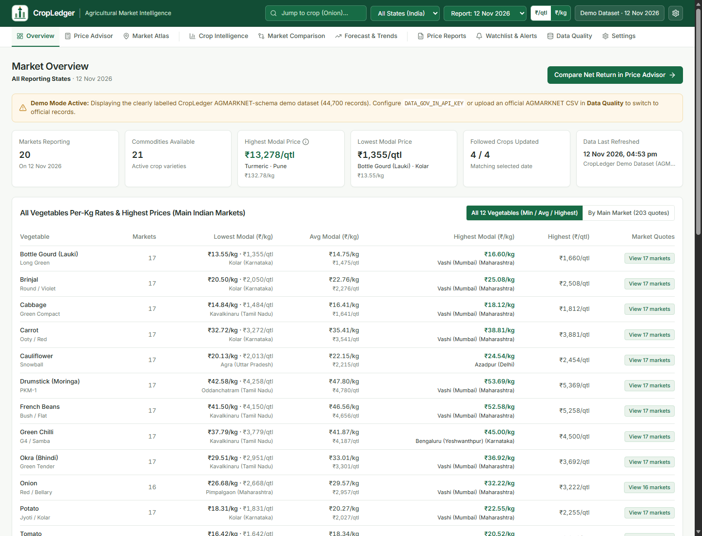

CROPLEDGER
AGRI INTELLIGENCE.
An Indian AgriTech market intelligence and selling decision platform for farmers and agricultural traders — pairing live AGMARKNET mandi price feeds, net-return haulage optimization, spatial Leaflet market atlases, and empirical price forecasting.

EVIDENCE-BASED SELLING DECISIONS FOR INDIAN AGRICULTURE.
High gross wholesale prices at distant mandis often mislead farmers into losses once transport costs, commissions, and loading fees are deducted. CropLedger calculates true net-realization rupees and compares regional markets with geospatial clarity.
Market Overview Dashboard
Real-time summary of modal prices, arrivals, price spreads across reporting APMC mandis, and quick net-return comparison shortcuts.
Net-Return Selling Advisor
Calculates net revenue = Gross - (Distance × Rate/km + Tolls + Mandi Fee% + Commission% + Handling), ranking best markets by take-home profit.
Geospatial Market Atlas
Leaflet choropleth and cluster map displaying regional mandi locations, price heatmaps, and radial haulage distance rings.
Crop Intelligence Deep-Dives
Commodity-level analysis of modal, minimum, and maximum prices, arrival volume distributions, and historical spread variance.
ML Price Trend Forecasting
Random Forest and Gradient Boosting models forecasting 7- to 30-day commodity price trajectories with 80% empirical prediction intervals.
AGMARKNET Data Quality Centre
Validates and standardizes data.gov.in and AGMARKNET CSV imports, normalizes units (Rs/Kg and Rs/Tonne to INR/Quintal), and audits feed freshness.
HOW IT WORKS.
React 19 Vite SPA communicates with FastAPI services orchestrating validation, net-return economics, GIS coordinates, and time-series forecasting over PostgreSQL and SQLite.
Data Ingest
AGMARKNET CSV & API price arrivals.
Quality Audit
Unit normalization & freshness audit.
Net-Return Math
Deduct haulage, toll, mandi fee & comm.
Forecasting
Random Forest & Gradient Boosting 80% CI.
Visual BI
Recharts, Leaflet atlas & PDF reports.
APPLICATION SCREENSHOTS.
Live screens captured from the running application. Click any image to view full size, or follow setup instructions in the GitHub repository.
ECONOMIC CALCULATION & FORECAST SPECIFICATIONS.
Key modules, rules, safety checks, and automated test results documented in the repository.
| Analysis Module | Economic / Algorithm Model | Decision Impact |
|---|---|---|
| Net Realization | Gross - (Distance × Rate + Toll + Mandi Fee% + Comm% + Labour) | Ranks mandis by actual take-home income |
| Price Forecasting | Random Forest + Gradient Boosting (chronological split) | 80% empirical prediction bounds |
| Data Quality Audit | Rs/Kg & Rs/Tonne -> INR/Quintal normalization | Prevents erroneous price skewing |
| Automated Tests | pytest suite covering models, schemas & analytics | 9 / 9 Passed (83% line coverage) |
CORE TECHNOLOGIES.
Frameworks, databases, visualization tools, and testing libraries used in CropLedger.
FUTURE ENHANCEMENTS.
Upcoming improvements planned for CropLedger.
EXPLORE SOURCE & DOCS.
View the complete codebase, sample datasets, quick-launch scripts, and automated test suites on GitHub.